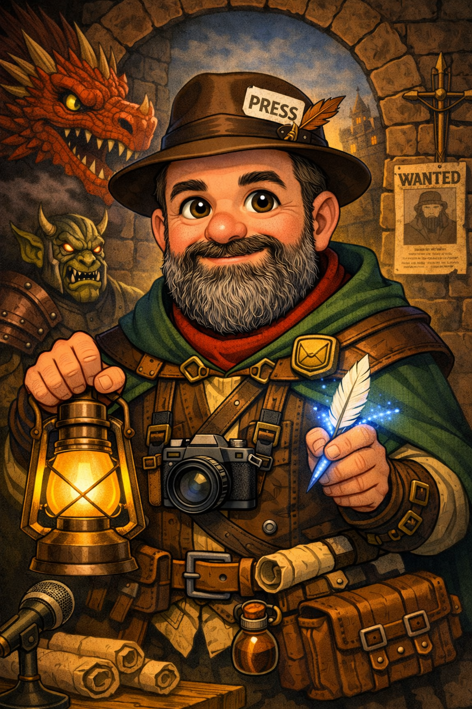

Репортаж
Назва першого матеріалу
Короткий опис матеріалу. Тут пізніше з'явиться справжній текст.

Студент журналістики
Персональний сайт-портфоліо. Тут зібрані журналістські матеріали, дослідження та публікації.
Короткий опис матеріалу. Тут пізніше з'явиться справжній текст.
Короткий опис матеріалу. Тут пізніше з'явиться справжній текст.
Короткий опис матеріалу. Тут пізніше з'явиться справжній текст.